Catálogo de Discos
¡Pide al staff que ponga uno!
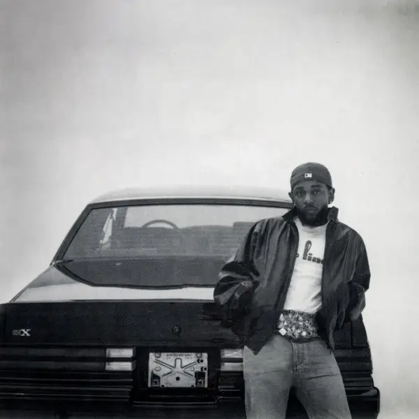
2024
GNX
Kendrick Lamar
 1998
1998
In the Aeroplane Over the Sea
Neutral Milk Hotel
2019
Igor
Tyler, The Creator
 2018
2018
The Now Now
Gorillaz
 1976
1976
A Day at the Races
Queen
 2007
2007
Minutes To Midnight
Linkin Park
 1981
1981
Canciones del solar de los aburridos
Willie Colón, Rubén Blades
 2020
2020
Future Nostalgia
Dua Lipa
 2018
2018
Ballads 1
Joji
 2024
2024
La nube en el jardín
Ed Maverick
1984
Amadeus
The Academy Of St. Martin-in-the-Fields
 1980
1980
Los Grandes Éxitos De The Platters
The Platters
 1985
1985
Tiempo Pá Matar
Willie Colón
 1973
1973
Los 3 Grandes
Varios (Hendrix, Clapton, Bourdon)
 1977
1977
Music Inspired By Star Wars And Other Galactic Funk
Meco
 1981
1981
Super Salsa Singers Vol. III
Jerry Masucci Presents Various
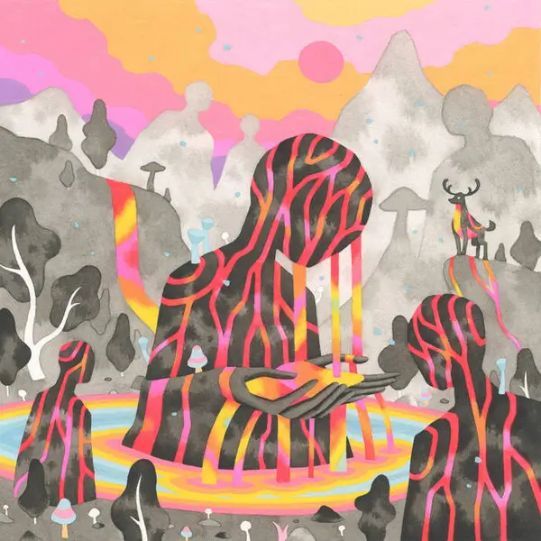
2023
Rizoma
Austin TV
1977
Animals
Pink Floyd
1981
4
Foreigner
 1958
1958
Más Canciones de El Grillito Cantor
Francisco Gabilondo Soler "Cri-Cri"
 1990
1990
Bachata rosa
Juan Luis Guerra y 4.40
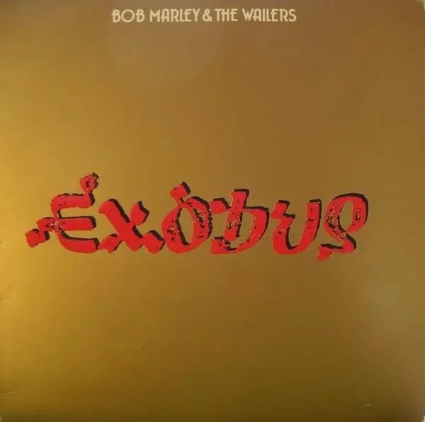
1977
Exodus
Bob Marley & The Wailers
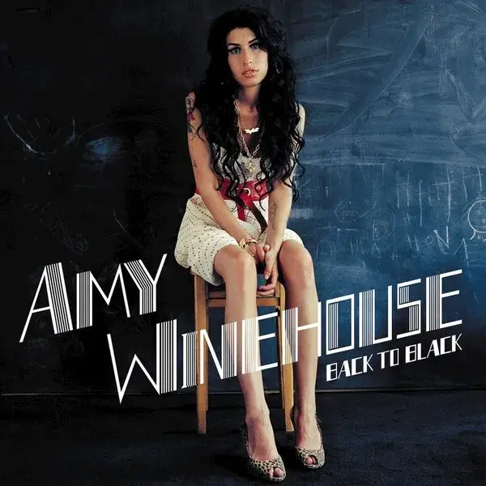
2006
Back to Black
Amy Winehouse
2022
SMITHEREENS
Joji
2020
The New Abnormal
The Strokes
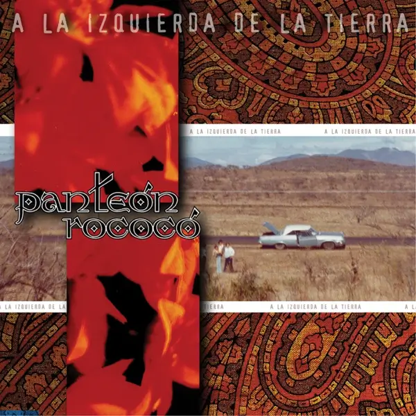
1999
A la Izquierda de la Tierra
Panteón Rococó
2001
Toxicity
System Of A Down
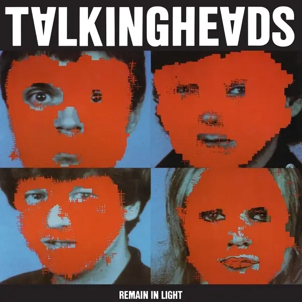
1980
Remain In Light
Talking Heads
1984
Various Positions
Leonard Cohen
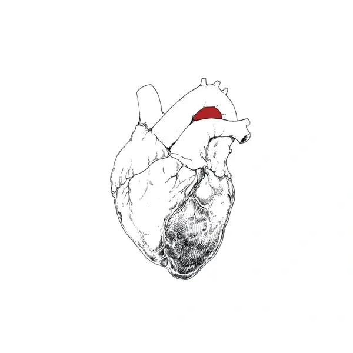
2023
The Beggar
Swans
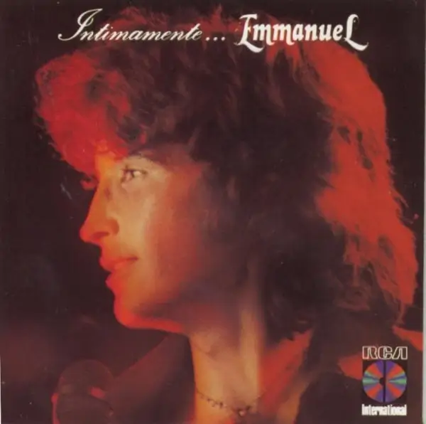
1980
Íntimamente...
Emmanuel
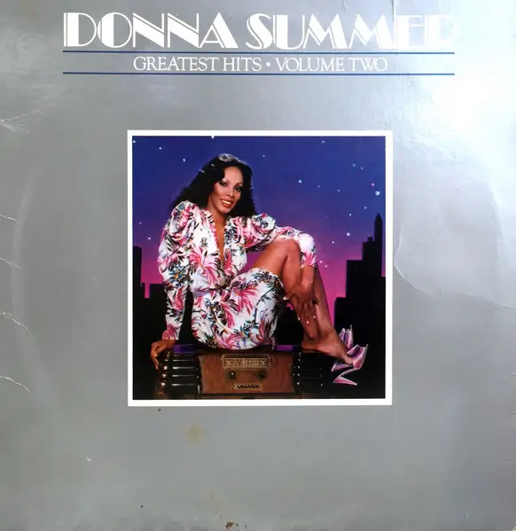
1979
Greatest Hits - Volume Two
Donna Summer
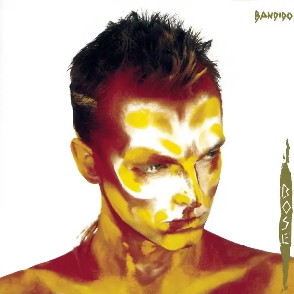
1984
Bandido
Miguel Bosé
 2015
2015
Black Lipstick
Chicano Batman
1965
Mambo
Perez Prado
 1984
1984
Ton's Que Mami
Chico Che Y La Crisis
 1993
1993
Tim Burton's The Nightmare Before Christmas (Original Motion Picture Soundtrack)
Danny Elfman
 1972
1972
The Rise and Fall of Ziggy Stardust and the Spiders From Mars
David Bowie
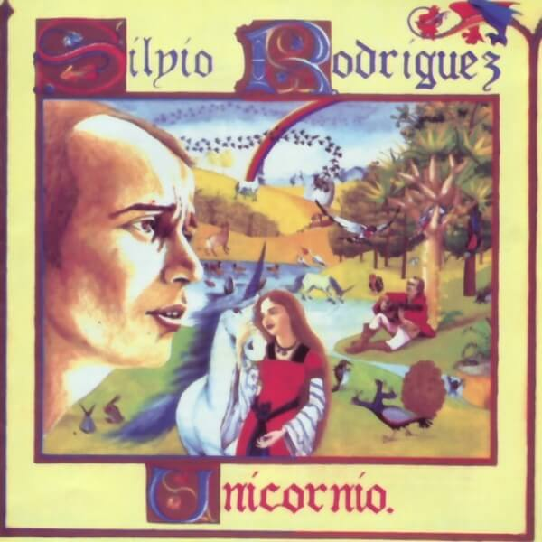
1982
Unicornio
Silvio Rodríguez
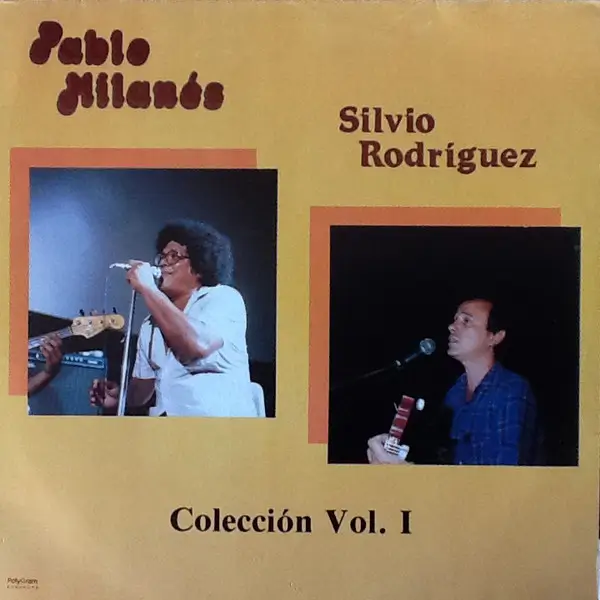
1987
Colección Vol. 1
Pablo Milanés & Silvio Rodriguez
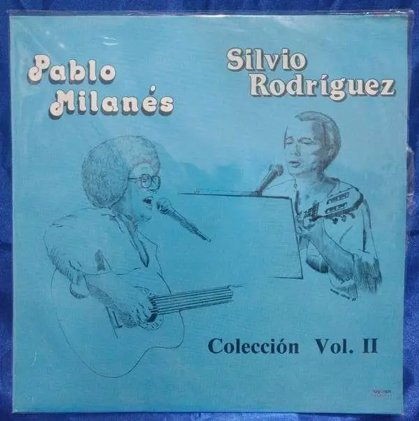
1987
Colección Vol. 2
Pablo Milanés & Silvio Rodriguez
 1964
1964
Amor
Eydie Gormé & the Trio Los Panchos
 1961
1961
Veracruz Hermoso
Conjunto Jarocho Medellin de Lino Chavez
 1980
1980
Amor amor
José José
 1976
1976
El príncipe
José José
 1958
1958
A Salute To Glenn Miller
Jerry Gray
 1982
1982
La Colección De John Lennon
John Lennon
 1978
1978
Wings Greatest
Wings
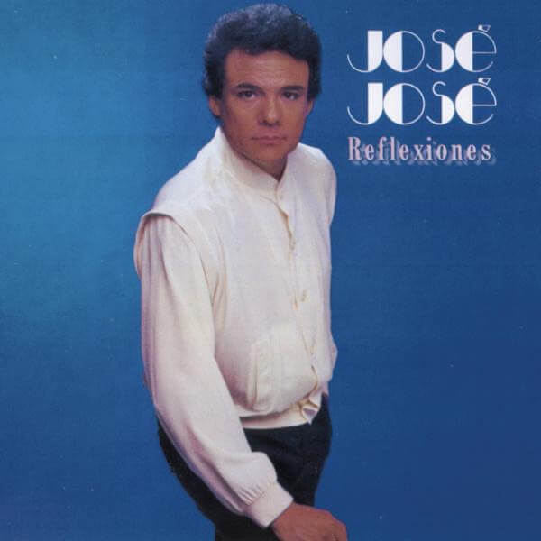
1984
Reflexiones
José José
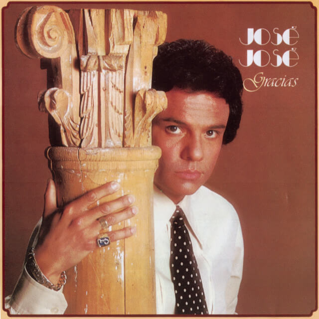
1981
Gracias
José José
 1977
1977
Love for Sale
Boney M.
 1981
1981
Inolvidable - Nat King Cole En Español
Nat King Cole
 1982
1982
Rock 'N' Roll Music Volume 2
The Beatles
 2015
2015
Canciones urgentes
Silvio Rodríguez
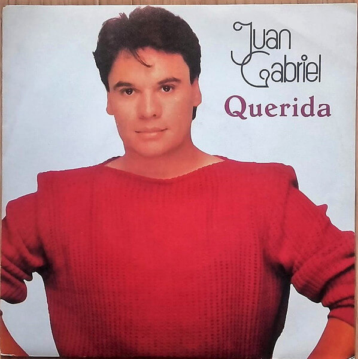
1984
Querida
Juan Gabriel
1999
Bocanada
Gustavo Cerati
 2020
2020
Live Vol.1
Parcels
 1981
1981
Living Eyes
Bee Gees
 1975
1975
A Night at the Opera
Queen
 1999
1999
Burning Love
Elvis Presley
Potpourri par Piaf
Édith Piaf
 1955
1955
Violines Mágicos
Violines Mágicos Villafontana
 1970
1970
Atom Heart Mother
Pink Floyd
Sgt. Pepper's Lonely Hearts Club Band
The Beatles
The Turn of a Friendly Card
The Alan Parsons Project
Live Album
Grand Funk Railroad
 1969
1969
Led Zeppelin
Led Zeppelin
 1965
1965
Rubber Soul
The Beatles
 1969
1969
The Book of Taliesyn
Deep Purple
 1981
1981
¡Viva Veracruz!
Conjunto Sotavento
 1979
1979
Canto A Lo Humano
Victor Jara
 1982
1982
Hot Space
Queen
 1959
1959
Historia de un amor
Pedro Infante
 1981
1981
15 Exitazos Tropicales De Rigo Tovar Y Su Costa Azul
Rigo Tovar Y Su Costa Azul
 2021
2021
El madrileño
C. Tangana
2014
Jungle
Jungle
 2022
2022
Dawn FM
The Weeknd
2020
Nectar
Joji
 2010
2010
Speak Now
Taylor Swift
 2016
2016
The Divine Feminine
Mac Miller
 1978
1978
Para cuando me vaya
Nacha Guevara
 2012
2012
good kid, m.A.A.d city
Kendrick Lamar
 2015
2015
To Pimp a Butterfly
Kendrick Lamar
 1961
1961
Melody And Percussion For Two Pianos
Ronnie Aldrich And His Two Pianos
 1984
1984
Los Beatles En Clásico
Los 12 Cellistas De La Filarmónica De Berlín
 1979
1979
Off The Wall
Michael Jackson
 1996
1996
Canciones Zapotecas Del Istmo. Oaxaca
Gabriel Lopez Chiñas, Martin Chacon Carrasco
 1992
1992
El Silencio
Caifanes
 2000
2000
Tlen Huicani - Música y Canto Vol. I
Tlen Huicani
 1959
1959
Kind Of Blue
Miles Davis
Marimba Chiapaneca
Hnos. Moreno García
.webp) 2016
2016
★ (Blackstar)
David Bowie
 1982
1982
Eye In The Sky
The Alan Parsons Project
 2021
2021
For The First Time
Black Country, New Road
 1974
1974
Anatomia Musical de
Oscar Chávez
 1985
1985
Vulture Culture
The Alan Parsons Project
 1969
1969
Tommy
The Who
 1972
1972
Never A Dull Moment
Rod Stewart
 1971
1971
Wild Life
Wings
 1979
1979
Dvořák Symphony No.8 In G Major, Op.88 / Tchaikovsky Romeo & Juliet - Fantasy Overture
Wiener Philharmoniker, Herbert von Karajan
 1973
1973
The Dark Side Of The Moon
Pink Floyd
 1976
1976
From Every Stage
Joan Baez
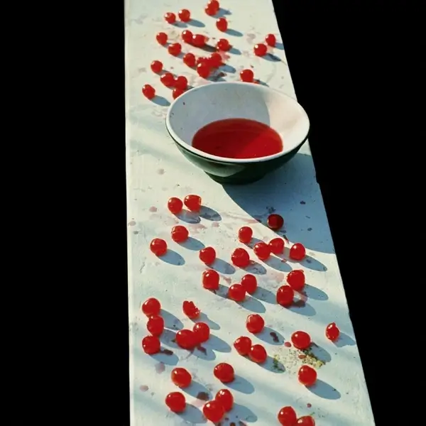
1970
McCartney
Paul McCartney
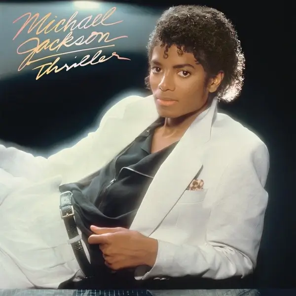
1982
Thriller
Michael Jackson
1980
Íntimamente...
Emmanuel
 1972
1972
Musica Del Istmo De Tehuantepec Oaxaca
Various
 1978
1978
Canción Por La Unidad Latinoamericana
Pablo Milanés
 2022
2022
Ants From Up There
Black Country, New Road
 1972
1972
Latinoamerica Canta
Oscar Chávez
 1964
1964
Discurso Del Cmdte. Ernesto Guevara En La XIX Asemblea General De Las Naciones Unidas
Ernesto Guevara
 1976
1976
Songs In The Key Of Life
Stevie Wonder
 1973
1973
Lo mato
Willie Colón
 1990
1990
En El Palacio De Bellas Artes
Juan Gabriel
 1988
1988
Tracy Chapman
Tracy Chapman
 2013
2013
Random Access Memory
Daft Punk
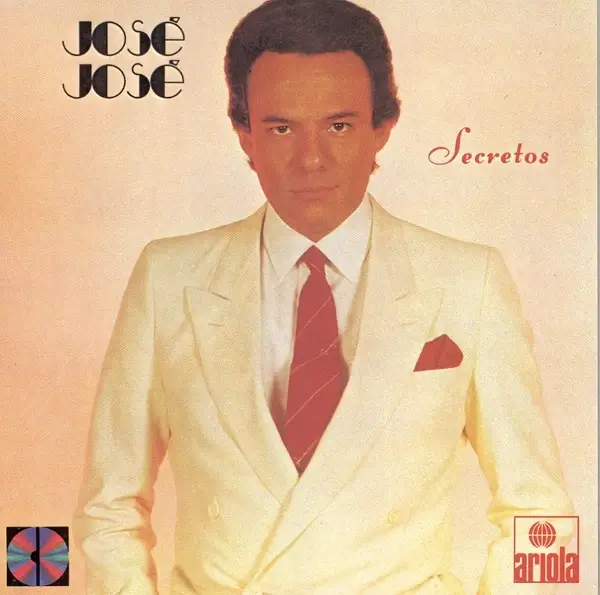
1983